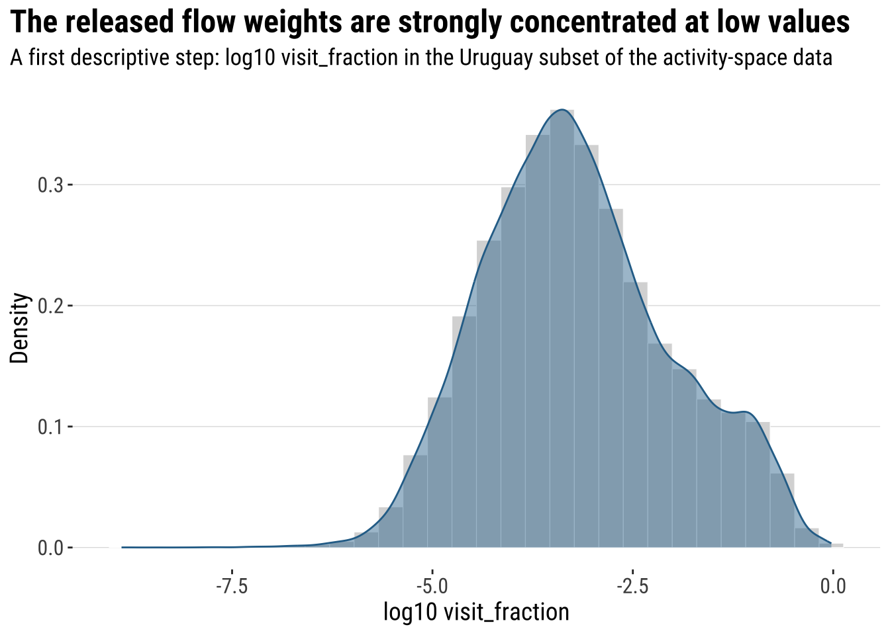
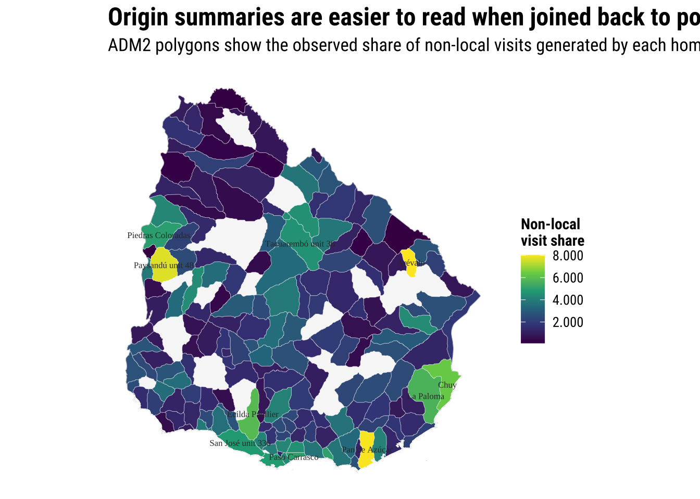
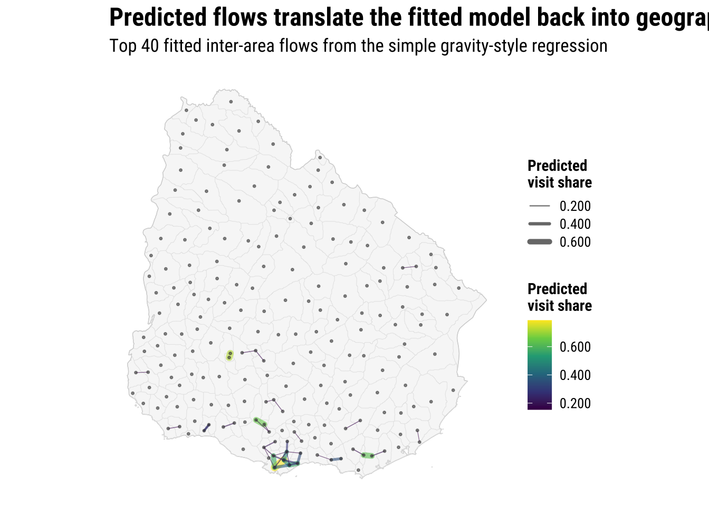

4 Spatial Interaction Modelling
This chapter introduces origin-destination thinking through activity-space flows in Uruguay. The aim is practical: before we fit any formal model, we want to understand what an OD table represents, how flows are structured, how to aggregate them, and how to connect those flows back to places in space. In applied work, these are usually the steps that make the difference between a useful flow analysis and a confusing tangle of origin and destination codes.
Internal migration remains a useful conceptual reference because it is one of the classic applications of spatial interaction modelling (Rowe and Patias 2020; Fotheringham and O’Kelly 1989). But for this course the main empirical case is fb-activity-spaces, which gives us a richer set of observed links between home areas and visited areas. That makes it much better suited to teaching OD structure, distance, flow visualisation, and the basic intuition behind interaction models in one coherent workflow.
4.1 Dependencies
4.2 Data
The chapter dataset is stored in data/fb-activity-spaces/activity_space_distributions_20260209_t_to_z.csv. For the course repository, this file has been reduced to a Uruguay-only subset extracted from a larger multi-country export. We still filter explicitly to Uruguay in the code so students can see the intended analytical subset clearly and so the workflow remains easy to adapt if a broader source extract is used later.
Each record links a home area to a visited area and reports a visit_fraction. For teaching purposes, we will treat that value as the observed strength of a directed flow from origin to destination in the released file. We therefore keep the OD logic front and centre: one row describes a relationship between two places, not an attribute of only one place.
activity_path <- "data/fb-activity-spaces/activity_space_distributions_20260209_t_to_z.csv"
gadm_path <- "data/boundaries/gadm36_URY_gpkg/gadm36_URY.gpkg"
label_path <- "data/boundaries/gadm36_ury_adm2_labels.csv"
if (!file.exists(activity_path)) {
stop("The chapter expects the fb-activity-spaces CSV to be present in data/fb-activity-spaces/.")
}
if (!file.exists(gadm_path)) {
stop("The chapter expects the GADM 3.6 Uruguay GeoPackage in data/boundaries/gadm36_URY_gpkg/.")
}
if (!file.exists(label_path)) {
stop("The chapter expects the GADM 3.6 label crosswalk in data/boundaries/gadm36_ury_adm2_labels.csv.")
}
activity_raw <- read_csv(
activity_path,
show_col_types = FALSE
) |>
# Drop the import index column if it is present
select(-any_of("X")) |>
mutate(ds = as.Date(ds))
activity_uy <- activity_raw |>
# Keep only the Uruguay rows required by the course brief
filter(country == "UY") |>
mutate(
home_gadm_name = str_squish(home_gadm_name),
visit_gadm_name = str_squish(visit_gadm_name),
day_or_night = factor(day_or_night, levels = c("daytime", "nighttime"))
) |>
# Drop incomplete OD records before building centroids and distances
filter(
!is.na(home_gadm_id),
!is.na(visit_gadm_id),
!is.na(home_longitude),
!is.na(home_latitude),
!is.na(visit_longitude),
!is.na(visit_latitude)
)
if (nrow(activity_uy) == 0) {
stop("No Uruguay rows were found after filtering country == 'UY'.")
}
gadm_ids <- union(unique(activity_uy$home_gadm_id), unique(activity_uy$visit_gadm_id))
label_lookup <- read_csv(
label_path,
show_col_types = FALSE
) |>
select(gadm_id, label_short, label_full, label_confidence)
uruguay <- st_read(
gadm_path,
layer = "gadm36_URY_0",
quiet = TRUE
) |>
st_make_valid()
adm2_polygons <- st_read(
gadm_path,
layer = "gadm36_URY_2",
quiet = TRUE
) |>
# Keep only the ADM2 polygons referenced by the activity-space data
filter(GID_2 %in% gadm_ids) |>
st_make_valid() |>
transmute(
gadm_id = GID_2,
gadm_name_raw = NAME_2,
department_name = NAME_1,
geometry = geom
) |>
left_join(label_lookup, by = "gadm_id") |>
mutate(
# Prefer the cleaned label file for student-facing maps and tables
gadm_name = coalesce(label_short, gadm_name_raw)
)
adm2_centroids <- adm2_polygons |>
# Derive one representative point per polygon for distances and flow lines
st_point_on_surface()
adm2_centroid_coords <- st_coordinates(adm2_centroids)
adm2_centroids <- adm2_centroids |>
# Store centroid coordinates explicitly for later line construction
mutate(
longitude = adm2_centroid_coords[, 1],
latitude = adm2_centroid_coords[, 2]
)
adm2_centroids_utm <- st_transform(adm2_centroids, 32721)At this point it is worth pausing on the structure of the data. This is not an area table where one row corresponds to one department or municipality. It is an OD table, so the observational unit is a pair of places. That has two immediate consequences. First, the data can contain several rows involving the same origin because one home area can connect to many destinations. Second, the same place can appear in two different analytical roles: as an origin in some rows and as a destination in others. That origin-destination way of thinking is central to spatial interaction analysis more broadly (Fotheringham and O’Kelly 1989).
od_snapshot <- tibble(
measure = c(
"Rows in the Uruguay subset",
"Distinct home areas",
"Distinct visit areas",
"Distinct observed origin-destination pairs",
"Dates in the released file"
),
value = c(
nrow(activity_uy),
n_distinct(activity_uy$home_gadm_id),
n_distinct(activity_uy$visit_gadm_id),
n_distinct(paste(activity_uy$home_gadm_id, activity_uy$visit_gadm_id)),
n_distinct(activity_uy$ds)
)
)
od_snapshot# A tibble: 5 × 2
measure value
<chr> <int>
1 Rows in the Uruguay subset 75373
2 Distinct home areas 173
3 Distinct visit areas 203
4 Distinct observed origin-destination pairs 6081
5 Dates in the released file 14.3 Data Wrangling
To analyse flows, we need to turn the released file into an OD table we can use consistently throughout the chapter. In a flow chapter, aggregation is usually the first real analytical step. We rarely model the raw file exactly as downloaded. Instead, we decide what one OD link should represent and then aggregate to that level. Here we sum visit_fraction for each origin-destination pair, keeping day_or_night so students can still compare daytime and nighttime structures later if they want to.
od_day_night <- activity_uy |>
# Aggregate repeated records to a clean OD table by time of day
group_by(
home_gadm_id,
home_gadm_name,
visit_gadm_id,
visit_gadm_name,
day_or_night
) |>
summarise(
visit_share = sum(visit_fraction, na.rm = TRUE),
.groups = "drop"
)
od_total <- od_day_night |>
# Collapse across daytime and nighttime for the main modelling table
group_by(
home_gadm_id,
home_gadm_name,
visit_gadm_id,
visit_gadm_name
) |>
summarise(
visit_share = sum(visit_share),
.groups = "drop"
)This is the key OD representation for the rest of the chapter. Each row now represents one directed link from a home area to a visited area, with a single flow strength attached to that link. Once that structure is in place, we can start asking familiar spatial interaction questions: which origins send activity to many destinations, which destinations attract many origins, how much movement stays local, and how quickly do flows thin out with distance?
We can summarise some of those questions at the origin level straight away. The distinction between local retention and non-local visits is especially useful pedagogically because it helps students see that self-links are also part of the OD system rather than an awkward exception to remove without thought.
origin_summary <- od_total |>
# Summarise outbound structure for each home area
group_by(home_gadm_id, home_gadm_name) |>
summarise(
total_outbound_share = sum(visit_share),
local_retention_share = sum(visit_share[home_gadm_id == visit_gadm_id], na.rm = TRUE),
non_local_share = sum(visit_share[home_gadm_id != visit_gadm_id], na.rm = TRUE),
n_destinations = n_distinct(visit_gadm_id),
top_destination_share = max(visit_share, na.rm = TRUE),
.groups = "drop"
) |>
mutate(
local_retention_share = replace_na(local_retention_share, 0),
non_local_share = replace_na(non_local_share, 0),
top_destination_share = replace_na(top_destination_share, 0)
) |>
left_join(
label_lookup |>
select(home_gadm_id = gadm_id, home_label = label_short),
by = "home_gadm_id"
) |>
mutate(home_label = coalesce(home_label, home_gadm_name)) |>
arrange(desc(non_local_share))
origin_summary |>
slice_head(n = 10) |>
select(home_gadm_id, home_label, non_local_share, local_retention_share, n_destinations, top_destination_share)# A tibble: 10 × 6
home_gadm_id home_label non_local_share local_retention_share n_destinations
<chr> <chr> <dbl> <dbl> <int>
1 URY.3.4_1 Arévalo 8.03 7.92 40
2 URY.9.4_1 Pan de Azú… 7.99 8.78 97
3 URY.11.9_1 Paysandú u… 7.70 7.18 27
4 URY.14.3_1 Chuy 6.33 15.7 87
5 URY.16.3_1 Ecilda Pau… 5.89 19.8 82
6 URY.14.4_1 La Paloma 5.65 10.3 71
7 URY.9.7_1 San Carlos 5.06 4.44 62
8 URY.2.17_1 Paso Carra… 5.01 14.5 152
9 URY.11.5_1 Piedras Co… 4.97 8.98 23
10 URY.10.1_1 Municipio A 4.88 32.2 191
# ℹ 1 more variable: top_destination_share <dbl>4.3.1 Joining polygons and deriving centroids so OD links become spatial objects
To map or measure flows, we need a spatial representation of the origin and destination areas. The activity-space documentation indicates that these data are built against GADM polygons, and for Uruguay the matching geography is the GADM 3.6 ADM2 layer. That is useful pedagogically because it means we can work with the actual polygons first and then derive centroids from them for distances and flow lines. More generally, this follows the standard spatial-data workflow of linking attributes, geometries, and derived representations such as centroids inside one reproducible sf pipeline (Lovelace, Nowosad, and Muenchow 2019; Bivand, Pebesma, and Gómez-Rubio 2013).
The first step is therefore to join the OD IDs directly to the ADM2 polygons. Once those polygons are in place, we derive one representative point per area using st_point_on_surface(). That gives us a centroid-like point that stays inside each polygon and is safe to use for distance calculations and line construction.
polygon_lookup <- adm2_polygons |>
# Keep the key polygon identifiers for later joins
st_drop_geometry()
centroid_lookup <- adm2_centroids |>
# Keep centroid coordinates alongside the matching GADM IDs
st_drop_geometry() |>
select(gadm_id, gadm_name, label_full, label_confidence, department_name, longitude, latitude)This conversion matters because once the polygons and derived centroids are stored as sf objects we can use spatial operations directly. We can map ADM2 areas as polygons, measure distances between centroid points, and build flow lines by connecting the representative points of each area. In other words, we have moved from a purely relational OD table to a workflow that keeps the areal geography visible throughout.
4.3.2 Measuring distance between origins and destinations
Distance is one of the basic ingredients of spatial interaction thinking. The usual expectation is not that distance determines flows on its own, but that movement becomes harder, less likely, or more selective as separation increases. To make that intuition operational, we compute a centroid-to-centroid distance for every observed OD pair.
Because distance should be measured in metres or kilometres rather than in longitude and latitude degrees, we carry out the calculation in a projected CRS. Here we use EPSG:32721, which is a suitable projected system for Uruguay and keeps the workflow consistent with earlier spatial chapters in the course.
distance_matrix <- st_distance(adm2_centroids_utm)
dimnames(distance_matrix) <- list(adm2_centroids_utm$gadm_id, adm2_centroids_utm$gadm_id)
od_total <- od_total |>
# Attach centroid-to-centroid distance to every OD pair
mutate(
distance_km = map2_dbl(
home_gadm_id,
visit_gadm_id,
\(origin_id, destination_id) {
as.numeric(distance_matrix[origin_id, destination_id]) / 1000
}
)
)
od_day_night <- od_day_night |>
# Add the same distance measure to the day-night table
mutate(
distance_km = map2_dbl(
home_gadm_id,
visit_gadm_id,
\(origin_id, destination_id) {
as.numeric(distance_matrix[origin_id, destination_id]) / 1000
}
)
)The distance values are now part of the OD table rather than a separate object. That is often the most convenient format for applied work because it means the same data frame can support descriptive summaries, visualisation, and a first modelling exercise.
distance_summary <- od_total |>
summarise(
mean_distance_km = weighted.mean(distance_km, visit_share, na.rm = TRUE),
median_distance_km = median(distance_km, na.rm = TRUE),
share_within_area = sum(visit_share[distance_km == 0], na.rm = TRUE) / sum(visit_share, na.rm = TRUE),
share_over_100km = sum(visit_share[distance_km > 100], na.rm = TRUE) / sum(visit_share, na.rm = TRUE)
) |>
mutate(across(where(is.numeric), round, 3))
distance_summary# A tibble: 1 × 4
mean_distance_km median_distance_km share_within_area share_over_100km
<dbl> <dbl> <dbl> <dbl>
1 13.4 119. 0.667 0.0154.4 Data Exploration
Before fitting any model, we examine the outcome descriptively. In this chapter the key outcome is the observed flow-strength measure visit_fraction, and the distance structure of the aggregated OD table gives us a second exploratory view of how those flows are distributed across space.
The distribution is highly uneven, so a log scale is much easier to read than the raw values. A histogram shows the concentration of the observed flow weights, and the kernel density line smooths that shape so the overall pattern is easier to interpret.
flow_distribution_raw <- activity_uy |>
# Log-transform the released flow-strength measure for a readable opening plot
mutate(log10_visit_fraction = log10(visit_fraction))
plot_flow_distribution <- ggplot(flow_distribution_raw, aes(x = log10_visit_fraction)) +
# Combine a histogram and kernel density to describe the outcome shape first
geom_histogram(
aes(y = after_stat(density)),
bins = 30,
fill = "grey85",
colour = "white",
linewidth = 0.2
) +
geom_density(fill = "#2A6F97", alpha = 0.45, colour = "#2A6F97", linewidth = 0.5) +
labs(
title = "The released flow weights are strongly concentrated at low values",
subtitle = "A first descriptive step: log10 visit_fraction in the Uruguay subset of the activity-space data",
x = "log10 visit_fraction",
y = "Density"
) +
theme_plot_course()
print(plot_flow_distribution)
This first plot already tells us something important about OD data. Most links are weak, while a much smaller set of links carries noticeably larger weights. That unevenness is exactly why OD analysis usually needs selective summaries and why a baseline interaction model often works on a transformed version of the outcome.
The dataset also distinguishes between daytime and nighttime activity spaces. That does not need to become the main storyline of the chapter, but it is a useful way to show that the same OD structure can be sliced by context. In practical terms, we can ask whether the distance profile of observed flows looks different between the two periods.
distance_bands <- od_day_night |>
# Group OD links into broad, interpretable distance classes
mutate(
distance_band = case_when(
distance_km == 0 ~ "Within same area",
distance_km < 25 ~ "0 to <25 km",
distance_km < 100 ~ "25 to <100 km",
TRUE ~ "100+ km"
),
distance_band = factor(
distance_band,
levels = c("Within same area", "0 to <25 km", "25 to <100 km", "100+ km")
)
) |>
group_by(day_or_night, distance_band) |>
summarise(
total_share = sum(visit_share, na.rm = TRUE),
.groups = "drop"
) |>
group_by(day_or_night) |>
mutate(share_within_period = total_share / sum(total_share, na.rm = TRUE)) |>
ungroup()
plot_distance_bands <- ggplot(
distance_bands,
aes(x = distance_band, y = share_within_period, fill = day_or_night)
) +
# Compare broad distance profiles across the two time periods
geom_col(position = "dodge", colour = "white", linewidth = 0.2) +
scale_fill_viridis_d(end = 0.8) +
scale_y_continuous(labels = label_percent(accuracy = 1)) +
labs(
title = "Observed flows vary by both distance and time of day",
subtitle = "Distance bands summarise how activity-space structure differs between daytime and nighttime",
x = "Centroid-to-centroid distance",
y = "Share of observed flow within period",
fill = NULL
) +
theme_plot_course()
print(plot_distance_bands)
4.5 Baseline Modelling
The next step is a standard baseline model. This follows the common structure in the brief: after describing the outcome, we fit a conventional linear regression before moving to the more explicitly flow-oriented extension.
The classic intuition is simple: flows between places often depend on three broad ingredients.
- some measure of how much activity an origin can send out
- some measure of how attractive or important a destination is
- some measure of separation or impedance between them, often distance
In formal research, spatial interaction models are often estimated with Poisson or related count models and may include balancing constraints, origin effects, destination effects, and richer measures of accessibility (Fotheringham and O’Kelly 1989). For this course, we use a lighter version that students can read and adapt easily later. The goal is to see the modelling logic rather than to cover every variant.
One of the standard ways to express that logic is with a simple gravity model:
\[ T_{ij} = k \frac{O_i^{\alpha} D_j^{\gamma}}{d_{ij}^{\beta}} \]
where (T_{ij}) is the flow from origin (i) to destination (j), (O_i) captures the sending capacity of the origin, (D_j) captures the attractiveness of the destination, and (d_{ij}) represents the separation between them, often distance. The constant (k) rescales the whole system, while (), (), and () control how strongly origin size, destination size, and distance shape the flow.
For a first course model, it is often easier to work with a log-linear version of the same idea:
\[ \log(T_{ij}) = \alpha_0 + \alpha_1 \log(O_i) + \alpha_2 \log(D_j) - \alpha_3 \log(d_{ij}) + \epsilon_{ij} \]
This is the logic we implement below. It is not a full gravity model in all its classical forms, but it captures the core intuition in a way that is transparent and easy to estimate with the OD table we have prepared.
The opening histogram already showed that flow strengths are highly uneven. We now turn that descriptive insight into a baseline regression by constructing a simplified OD modelling table.
We therefore create a simplified OD modelling table. We keep only inter-area flows so that the model focuses on movement between different places, then attach three predictors:
-
origin_mass: total outbound visit share generated by the origin -
destination_mass: total inbound visit share attracted by the destination -
distance_km: centroid-to-centroid separation
destination_summary <- od_total |>
# Summarise inbound attraction for each destination
group_by(visit_gadm_id, visit_gadm_name) |>
summarise(
destination_mass = sum(visit_share),
n_origins = n_distinct(home_gadm_id),
.groups = "drop"
)
od_model <- od_total |>
# Focus on inter-area links for the simplified interaction model
filter(home_gadm_id != visit_gadm_id) |>
left_join(
origin_summary |>
select(home_gadm_id, origin_mass = total_outbound_share),
by = "home_gadm_id"
) |>
left_join(
destination_summary |>
select(visit_gadm_id, destination_mass),
by = "visit_gadm_id"
) |>
mutate(
# Log-transform the main quantities to match the usual interaction logic
log_flow = log(visit_share),
log_origin_mass = log(origin_mass),
log_destination_mass = log(destination_mass),
log_distance_km = log(distance_km)
) |>
drop_na(log_flow, log_origin_mass, log_destination_mass, log_distance_km)
interaction_model <- lm(
log_flow ~ log_origin_mass + log_destination_mass + log_distance_km,
data = od_model
)4.6 Flow-Specific Extension
The final section moves beyond the shared template and focuses on the distinctive logic of spatial interaction: visualising observed flows, interpreting the coefficients as a simple gravity-style model, checking how well the model performs, and showing how fitted values can be used as practical predictions.
4.6.1 Seeing observed flows
A good flow map is selective. If we draw every OD link in a rich dataset, the result usually becomes unreadable. In practice, we often begin with two visual strategies. One is to map the locations of the observed areas and size or colour them by an origin or destination summary. The other is to draw only the strongest inter-area flows so that the main structure is visible.
The map below starts with origin summaries. This is still OD analysis, but aggregated back to the origin side so we can ask which home areas generate more non-local activity in the released file.
origin_polygons <- adm2_polygons |>
# Join origin summaries back to the ADM2 polygon layer
left_join(
origin_summary |>
select(home_gadm_id, home_label, non_local_share, local_retention_share),
by = c("gadm_id" = "home_gadm_id")
)
origin_labels <- adm2_centroids |>
# Label only the strongest non-local origins to keep the map readable
left_join(
origin_summary |>
select(home_gadm_id, home_label, non_local_share),
by = c("gadm_id" = "home_gadm_id")
) |>
filter(!is.na(non_local_share)) |>
slice_max(non_local_share, n = 12, with_ties = FALSE)
map_origin_non_local <- ggplot() +
# Draw the national outline first for spatial context
geom_sf(data = uruguay, fill = "grey97", colour = "grey75", linewidth = 0.25) +
# Fill the observed home polygons by their non-local activity
geom_sf(
data = filter(origin_polygons, !is.na(non_local_share)),
aes(fill = non_local_share),
colour = "white",
linewidth = 0.08
) +
# Label the strongest origins with the cleaned short names
geom_sf_text(
data = origin_labels,
aes(label = home_label),
size = 2.2,
colour = "grey20",
check_overlap = TRUE
) +
scale_fill_course_seq_c(labels = label_number(accuracy = 0.001)) +
labs(
title = "Origin summaries are easier to read when joined back to polygons",
subtitle = "ADM2 polygons show the observed share of non-local visits generated by each home area",
fill = "Non-local\nvisit share"
) +
theme_map_course()
print(map_origin_non_local)
This kind of summary is useful, but it does not yet show the links themselves. To do that, we keep only the strongest inter-area flows and convert them into line geometries. This is one of the most common practical steps in OD analysis: create a line from the origin centroid to the destination centroid, then map only the flows that are large enough to interpret clearly.
top_flows_tbl <- od_total |>
# Exclude self-flows so the map highlights between-area links
filter(home_gadm_id != visit_gadm_id) |>
arrange(desc(visit_share)) |>
slice_head(n = 40) |>
left_join(
centroid_lookup |>
rename(
home_gadm_id = gadm_id,
home_gadm_name_polygon = gadm_name,
home_longitude = longitude,
home_latitude = latitude,
home_department = department_name
),
by = "home_gadm_id"
) |>
left_join(
centroid_lookup |>
rename(
visit_gadm_id = gadm_id,
visit_gadm_name_polygon = gadm_name,
visit_longitude = longitude,
visit_latitude = latitude,
visit_department = department_name
),
by = "visit_gadm_id"
)
top_flow_geometries <- pmap(
top_flows_tbl[, c("home_longitude", "home_latitude", "visit_longitude", "visit_latitude")],
\(home_longitude, home_latitude, visit_longitude, visit_latitude) {
st_linestring(
matrix(
c(home_longitude, home_latitude, visit_longitude, visit_latitude),
ncol = 2,
byrow = TRUE
)
)
}
)
top_flows <- st_sf(
top_flows_tbl,
geometry = st_sfc(top_flow_geometries, crs = 4326)
)
top_flow_labels <- top_flows_tbl |>
# Label only the strongest origins in the flow-line map
distinct(home_gadm_id, home_gadm_name_polygon, home_longitude, home_latitude) |>
slice_head(n = 12) |>
st_as_sf(coords = c("home_longitude", "home_latitude"), crs = 4326, remove = FALSE)
map_top_flows <- ggplot() +
# Draw the country outline underneath the flow lines
geom_sf(data = uruguay, fill = "grey97", colour = "grey80", linewidth = 0.25) +
# Add the ADM2 polygons lightly so the flow lines sit over the actual geography
geom_sf(data = adm2_polygons, fill = NA, colour = "grey88", linewidth = 0.08) +
# Plot the strongest observed inter-area flows
geom_sf(
data = top_flows,
aes(linewidth = visit_share, colour = visit_share),
alpha = 0.6,
lineend = "round"
) +
# Add the centroid locations used to generate the lines
geom_sf(data = adm2_centroids, colour = "grey25", size = 0.55, alpha = 0.55) +
# Label the strongest origin nodes with the cleaned short names
geom_sf_text(
data = top_flow_labels,
aes(label = home_gadm_name_polygon),
size = 2.1,
colour = "grey20",
check_overlap = TRUE
) +
scale_linewidth_continuous(labels = label_number(accuracy = 0.001), range = c(0.2, 2.5)) +
scale_colour_course_seq_c(labels = label_number(accuracy = 0.001)) +
labs(
title = "The strongest OD links reveal the main flow structure",
subtitle = "Top 40 inter-area flows in the Uruguay subset of the activity-space data",
linewidth = "Visit share",
colour = "Visit share"
) +
theme_map_course()
print(map_top_flows)
This figure is intentionally selective. It is not designed to show every possible movement link. Instead, it reveals the strongest structure in a way students can still read. That is often the right compromise in teaching and in exploratory analysis: simplify the visual output enough to make the geography legible, while keeping the OD logic intact.
4.6.2 Statistical inference and interpretation
This model is deliberately simple, but its structure matches the way spatial interaction thinking is usually introduced. Larger origins should tend to send more flow, more attractive destinations should tend to receive more flow, and greater distance should tend to reduce the observed connection between them. The signs of the estimated coefficients matter more here than the exact numerical values.
# A tibble: 4 × 5
term estimate std.error statistic p.value
<chr> <dbl> <dbl> <dbl> <dbl>
1 (Intercept) 1.74 0.157 11.1 0
2 log_origin_mass -0.175 0.037 -4.77 0
3 log_destination_mass 0.888 0.027 32.6 0
4 log_distance_km -1.91 0.032 -59.1 04.6.3 Model assessment
For regression models, assessment should include both an overall numerical summary and a visual check. Here we report a small set of familiar fit measures. R^2 tells us how much variation in logged flow strength is captured by the model, adjusted R^2 penalises unnecessary complexity, and AIC gives a comparative measure of fit that becomes especially useful when students later compare alternative model specifications.
# A tibble: 1 × 6
r_squared adj_r_squared sigma aic bic n_obs
<dbl> <dbl> <dbl> <dbl> <dbl> <int>
1 0.431 0.431 2.02 25076. 25109. 5908These values should be read as guides rather than as a final verdict on the model. A higher R^2 means the baseline gravity-style regression is capturing more of the broad OD structure, while a lower AIC would indicate a better trade-off between fit and parsimony when comparing competing models on the same data. In this chapter, the aim is not to optimise every metric, but to show how even a simple interaction model can recover part of the large-scale pattern in the flows. Students who want a broader overview of regression-based spatial analysis workflows can follow up with texts such as Arribas-Bel (2014) and Bivand, Pebesma, and Gómez-Rubio (2013).
A fitted-versus-observed plot adds a visual assessment. The model will not reproduce every OD link well, and that is fine. The point is to show that even a compact three-part structure can explain some of the broad pattern in the flow table.
model_diagnostics <- augment(interaction_model) |>
mutate(
observed_flow = exp(.resid + .fitted),
fitted_flow = exp(.fitted)
)
plot_model_fit <- ggplot(
model_diagnostics,
aes(x = fitted_flow, y = observed_flow)
) +
# Compare observed and fitted flow strengths on the original scale
geom_point(alpha = 0.2, colour = "#2A6F97", size = 1) +
geom_abline(intercept = 0, slope = 1, colour = "#B2182B", linewidth = 0.5) +
scale_x_log10(labels = label_number(accuracy = 0.001)) +
scale_y_log10(labels = label_number(accuracy = 0.001)) +
labs(
title = "A simplified interaction model captures broad flow structure",
subtitle = "Observed versus fitted inter-area visit shares in log-log space",
x = "Fitted visit share",
y = "Observed visit share"
) +
theme_plot_course()
print(plot_model_fit)
4.6.4 Model prediction in practice
One practical use of an interaction model is prediction. Once the coefficients have been estimated, we can generate fitted flows for each observed OD pair and ask which links the model expects to be strongest. In applied work, this is often the bridge between a conceptual gravity model and a planning task such as forecasting travel demand or identifying the links that deserve closer scrutiny.
predicted_top_flows_tbl <- od_model |>
# Convert fitted values back to the original flow scale
mutate(predicted_flow = exp(predict(interaction_model, newdata = od_model))) |>
arrange(desc(predicted_flow)) |>
slice_head(n = 40) |>
left_join(
centroid_lookup |>
rename(
home_gadm_id = gadm_id,
pred_home_longitude = longitude,
pred_home_latitude = latitude
),
by = "home_gadm_id"
) |>
left_join(
centroid_lookup |>
rename(
visit_gadm_id = gadm_id,
pred_visit_longitude = longitude,
pred_visit_latitude = latitude
),
by = "visit_gadm_id"
)
predicted_flow_geometries <- pmap(
predicted_top_flows_tbl[, c("pred_home_longitude", "pred_home_latitude", "pred_visit_longitude", "pred_visit_latitude")],
\(pred_home_longitude, pred_home_latitude, pred_visit_longitude, pred_visit_latitude) {
st_linestring(
matrix(
c(pred_home_longitude, pred_home_latitude, pred_visit_longitude, pred_visit_latitude),
ncol = 2,
byrow = TRUE
)
)
}
)
predicted_top_flows <- st_sf(
predicted_top_flows_tbl,
geometry = st_sfc(predicted_flow_geometries, crs = 4326)
)
map_predicted_flows <- ggplot() +
# Draw the national outline and ADM2 boundaries for predicted links
geom_sf(data = uruguay, fill = "grey97", colour = "grey80", linewidth = 0.25) +
geom_sf(data = adm2_polygons, fill = NA, colour = "grey88", linewidth = 0.08) +
# Show the strongest fitted flows implied by the interaction model
geom_sf(
data = predicted_top_flows,
aes(linewidth = predicted_flow, colour = predicted_flow),
alpha = 0.6,
lineend = "round"
) +
geom_sf(data = adm2_centroids, colour = "grey25", size = 0.55, alpha = 0.55) +
scale_linewidth_continuous(labels = label_number(accuracy = 0.001), range = c(0.2, 2.5)) +
scale_colour_course_seq_c(labels = label_number(accuracy = 0.001)) +
labs(
title = "Predicted flows translate the fitted model back into geography",
subtitle = "Top 40 fitted inter-area flows from the simple gravity-style regression",
linewidth = "Predicted\nvisit share",
colour = "Predicted\nvisit share"
) +
theme_map_course()
print(map_predicted_flows)
4.7 What to take away
The most important lesson from this chapter is not a single function call. It is the analytical sequence. With OD data, we usually need to:
- define what one flow record should represent
- aggregate to that OD level
- attach a spatial representation of origins and destinations
- compute separation measures such as distance
- map the structure selectively
- move into a model that links flow strength to origin mass, destination mass, and separation
That sequence is transferable well beyond this dataset. Students working on commuting, school catchments, service access, migration, or transport demand will often follow the same logic even if the substantive application changes. The details differ, but the OD way of thinking remains the same.